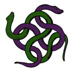

Enciclica degli Incantesimi Generali del Serpente
1° LIVELLO DI POTERE
| Battlefate | Charm |
| Sphere : | Charm |
| Range : | 18 metri |
| Components : | V, S, M |
| Duration : | 4 round + 1 round/2 livelli |
| Casting Time : | 4 |
| Area of Effect : | Una creatura |
| Saving Throw : | None |
Quando il chierico lancia questa magia invoca il potere delle propria divinità affinché renda la creatura beneficiaria più forte in battaglia. Per tutta la durata dell'incantesimo, che è pari a 4 round + 1 round ogni due livelli di lancio della magia (5 round al 1° e 2° livello, 6 round al 3° e 4° livello, 7 round al 5° e 6° livello, e così via...) fino ad un massimo di 10 round all'11° livello di lancio, chi riceve gli effetti di questa magia dovrà tirare 1d6 nella fase delle intenzioni per determinare il beneficio ricevuto. Il tiro va ripetuto all'inizio di ogni nuovo round di combattimento. Per determinare il beneficio si consulti, dunque, la seguente tabella:
| TIRO | BENEFICIO |
| 1 | Nessun beneficio sarà applicato nel round |
| 2 | Difesa Migliorata, si applichi il bonus alla Classe Armatura |
| 3 | Attacco Migliorato, si applichi il bonus ai Tiri per Colpire |
| 4 | Danno Potenziato, si applichi il bonus ai Danni |
| 5 | Resistenza Maggiorata, si applichi il bonus ai Tiri Salvezza |
| 6 | Il beneficiario può scegliere che beneficio applicare nel round |
Si noti che il bonus previsto per i danni sarà applicato solo ai danni principali prodotti dagli attacchi effettuati dalla creatura non applicandosi, ad esempio, ai danni prodotti da poteri speciali, ai danni supplementari prodotti con arti di combattimento od ai danni prodotti tramite il lancio delle magie. L'ammontare del bonus applicato al beneficiario dipende dal livello di lancio della magia. In particolare sarà applicato un bonus di +1 se la magia è utilizzata dal 1° al 4° livello di lancio ed un bonus di +2 se la magia è utilizzata a partire dal 5° livello di lancio. Si osservi che questi bonus, come del resto ogni altro bonus di origine divina, non si cumulano con bonus, sempre di origine divina, che incidano sul medesimo tiro od effetto. Il componente materiale di questo incantesimo è una moneta di metallo con inciso il simbolo della divinità dal costo di 3 monete d'oro e dal peso pari ad 1/10 di libbra che si consuma al lancio dell'incantesimo.
| Call Upon Faith | Summoning |
| Sphere : | Summoning |
| Range : | 0 |
| Components : | V, S, M |
| Duration : | Speciale |
| Casting Time : | 1 |
| Area of Effect : | The Caster |
| Saving Throw : | None |
Prima di iniziare una qualsiasi difficile azione il chierico può invocare l'aiuto della propria divinità. In questo modo il chierico otterrà un beneficio corrispondente ad un bonus +3 (+15%) che potrà applicare ad un singolo tiro necessario ad effettuare il compimento dell'azione. Questo beneficio può essere utilizzato solo per il compimento di un'azione che inizi e si concluda nel round immediatamente successivo a quello del lancio della presente magia. Si noti che questo incantesimo non può essere utilizzato nel caso in cui il chierico desideri effettuare un'azione consistente nell'invocare un intervento divino. Il componente materiale di questo incantesimo è il simbolo sacro del chierico.
| Cause Fear | Charm |
| Sphere : | Charm |
| Range : | 9 metri |
| Components : | V, S |
| Duration : | 1d3 round |
| Casting Time : | 3 |
| Area of Effect : | Una creatura |
| Saving Throw : | Negates |
Quando il chierico lancia questa magia la vittima ha diritto a superare un tiro salvezza su coraggio. Se il tiro salvezza fallisce la vittima sarà terrorizzata dal chierico e non compierà alcuna altra azione se non fuggire alla maggiore distanza possibile dallo stesso per l'intera durata dell'incantesimo. La vittima, in ogni caso, fuggirà utilizzando le sue comuni modalità di movimento non ricorrendo all'utilizzo di metodi magici di teletrasporto o di oggetti magici (si pensi ad una pozione gassosa od una pozione del ritorno). Se impossibilitata a scappare la vittima resterà ferma e si limiterà a difendersi passivamente senza ottenere alcuna penalità ma non potendo utilizzare poteri od abilità speciali, punti o manovre di combattimento.
| Combine | Summoning |
| Sphere : | All |
| Range : | Tocco |
| Components : | V, S |
| Duration : | Speciale |
| Casting Time : | 1 round |
| Area of Effect : | Speciale |
| Saving Throw : | None |
Questo incantesimo cumulativo può essere utilizzato da due a quattro chierici. La magia, per precisione, viene utilizzata sempre sul chierico del livello di esperienza più lato (in caso di chierici di pari livello su uno a loro scelta) da quelli di livello più basso. Costoro lanciano la magia toccando il chierico che deve ottenere gli effetti benefici. Quest'ultimo quindi potrà considerarsi, fino a che perdura questa magia, di un livello di esperienza superiore per ogni chierico che ha utilizzato su di lui questo incantesimo al solo fine di effettuare un'azione di scacciare o controllare i non morti e di determinare il livello di lancio dei propri incantesimi. Si noti che, nonostante il chierico possa lanciare magie ad un livello di lancio superiore, questo incantesimo non permette al chierico di accedere a magie diverse da quelle alle quali aveva regolarmente accesso né di ottenere punti preghiera supplementari. Per funzionare la magia richiede che il chierico beneficiario non si sposti dalla posizione occupata al momento del suo lancio nonché il mantenimento della concentrazione da parte dei chierici che l'hanno lanciata i quali, se attaccati durante il mantenimento della concentrazione, saranno considerati (sempre che non decidano di interromperla) come se fossero storditi [stunned]. Se, per qualsiasi motivo, viene meno la concentrazione del chierico che ha lanciato questo incantesimo od il suo contatto fisico con il beneficiario (ad es. il chierico che ha lanciato la magia si sposta o cade al suolo knockdown) la magia terminerà immediatamente solo in relazione al chierico che ha interrotto la concentrazione. Se, invece, è il chierico che beneficia di questa magia a spostarsi dalla posizione originariamente occupata (od a cadere al suolo knockdown) costui farà venir meno tutte le magie di combine che gli erano state lanciate. Si noti, infine, che se è solo il chierico beneficiario a perdere la concentrazione nel lancio delle sue magie ciò non influenzerà gli incantesimi di combine che gli erano stati lanciati addosso.
| Command | Charm |
| Sphere : | Law |
| Range : | 15 metri |
| Components : | V |
| Duration : | Speciale |
| Casting Time : | 1 |
| Area of Effect : | Una creatura |
| Saving Throw : | Speciale |
Questo incantesimo mentale permette al chierico di comandare un'altra creatura utilizzando una singola parola. Per poter avere effetto la magia deve essere lanciata su una creatura intelligente (almeno Low Intelligent 5-7) che sia in grado di udire e comprendere la parola di comando utilizzata dal chierico (deve, ad esempio, conoscere la lingua utilizzata dal chierico). Nel round immediatamente successivo a quello di lancio, quindi, la creatura obbedirà meccanicamente al comando dato dal chierico. Il chierico può imporre alla creatura qualsiasi comando possa esprimere ragionevolmente utilizzando un'unica parola. Se il comando risulta di impossibile esecuzione la magia fallirà miseramente. Ogni comando di tipo suicida, comportante in via diretta la morte della creatura (si pensi al comando di buttarsi nella lava o in un precipizio) e lo stesso comando "suicidati" sarà automaticamente ignorato e farà fallire la magia. Unica eccezione è rappresentata dal comando "muori" o da comandi ad esso equivalenti (si pensi a "svieni" e "stordisciti"). In questo caso, la creatura si considererà stordita (stunned) per l'intero round successivo a quello di lancio dell'incantesimo. Comandi del genere "fermati", "bloccati", "paralizzati" e comandi ad essi equivalenti renderanno la creatura impedita (hindered) per l'intero round successivo a quello di lancio dell'incantesimo. Ogni comando comportante un serio pregiudizio per gli interessi o per l'incolumità fisica della creatura (si pensi al comando di gettare le armi nel corso di un combattimento, oppure al comando di entrare nel fuoco o in una nube tossica) potrà essere disobbedito dalla creatura la quale, però, sarà considerata impedita (hindered) per l'intero round successivo al lancio della magia. Deve puntualizzarsi che la magia ha effetto solo nel round immediatamente successivo a quello di lancio, essendo la vittima libera di agire senza limitazioni successivamente allo stesso. La magia ha effetto direttamente sulle menti deboli, infatti, hanno diritto ad un tiro salvezza su mente per evitarne gli effetti solo le creature che posseggono 5 o più dadi vita o livelli e quelle dotate di elevata intelligenza (almeno Highly intelligent 13-14).
| Detect Magic | Divination |
| Sphere : | Divination |
| Range : | 0 |
| Components : | V, S, M |
| Duration : | 1 round |
| Casting Time : | 1 round |
| Area of Effect : | The Caster |
| Saving Throw : | None |
Quando il chierico lancia questo incantesimo riesce a percepire la luminosità delle aure magiche presenti entro 30 metri di distanza dallo stesso. Per poter percepire la luminosità dell'aura, però, il chierico deve poter vedere, anche se parzialmente, l'oggetto o la zona in cui l'aura è in effetto. Un chierico non potrà vedere, ad es. l'aura di un oggetto magico che si trova all'interno di uno zaino o sepolto da macerie. In base all'intensità dell'aura, inoltre, il chierico potrà determinare la potenza dell'incantamento. Se si tratta di effetti magici dovuti ad incantesimi, quindi, il chierico potrà determinare il livello di potere della magia di cui analizza gli effetti. Se, invece, si tratta di oggetti magici costui potrà determinarne la potenza dell'incantamento come indicata nella seguente scala:
|
POTENZA DELL'INCANTAMENTO |
PUNTI ESPERIENZA |
| Least Minor Enchantment | 75 punti esperienza |
| Lesser Minor Enchantment | 100 punti esperienza |
| Minor Enchantment | 150 punti esperienza |
| Superior Minor Enchantment | 250 punti esperienza |
| Greater Minor Enchantment | 375 punti esperienza |
| Lesser Enchantment | 500 punti esperienza |
| Superior Enchantment | 1000 punti esperienza |
| Greater Enchantment | 1500 punti esperienza |
Il componente materiale di questo incantesimo è il simbolo sacro del chierico.
| Detect Poison | Divination |
| Sphere : | Divination |
| Range : | 30 metri |
| Components : | V, S, M |
| Duration : | Istantanea |
| Casting Time : | 4 |
| Area of Effect : | Una creatura od un oggetto |
| Saving Throw : | None |
Quando il chierico lancia questo incantesimo riesce a percepire se l'oggetto o la creatura indicata durante il lancio della magia è velenoso od è stato avvelenato. Risulterà velenosa qualsiasi creatura abbia capacità venefiche. Il chierico potrà ad esempio individuare un'arma od una bevanda che è stata avvelenata. Si noti che il chierico non rileverà come velenosi gli oggetti magici che solo quando attivati diventino tali a meno che la magia non sia lanciata durante la loro attivazione (ciò contrariamente a quegli oggetti che sono sempre potenzialmente velenosi ma che richiedono un particolare tiro per infondere il loro veleno, si pensi ad un'arma di arcanite che risulterà sempre velenosa). Il chierico, inoltre, avrà una possibilità pari al 5% per livello di lancio dell'incantesimo (fino ad un massimo del 95%) di determinare anche la tipologia e gli effetti specifici del veleno che ha individuato. Il componente materiale di questo incantesimo è una striscia di velluto bianco che diventa nero se l'oggetto dell'incantesimo è velenoso od è stato avvelenato. Comunemente 10 strisce di questo velluto hanno un costo di 3 monete d'oro ed un peso pari ad 1 libbra. Il componente si consuma al lancio dell'incantesimo.
| Malison | Necromancy |
| Sphere : | All |
| Range : | 0 |
| Components : | V, S, M |
| Duration : | 6 rounds |
| Casting Time : | 1 round |
| Area of Effect : | Speciale |
| Saving Throw : | Negates |
Attraverso questa magia il chierico invoca la maledizione della propria divinità sui suoi avversari. La magia influenzerà una creatura per ogni livello di lancio della stessa (fino ad un massimo di 10 creature al 10° livello di lancio) che si trovino ad una distanza massima di 30 metri dal chierico al momento del lancio dell'incantesimo. Le vittime hanno diritto ad un tiro salvezza su magia per evitare gli effetti della magia. Chi si trova sotto gli effetti di questo incantesimo riceve un malus di -1 a tutti i tiri per colpire e di -1 ai tiri salvezza contro paura. Si noti che questi malus, come del resto ogni altro malus di origine divina, non si cumulano con malus, sempre di origine divina, che incidano sul medesimo tiro od effetto. Il componente materiale di questo incantesimo è una boccetta d'acqua santa che si consuma al momento del lancio.
| Protection from Good | Abjuration |
| Sphere : | Protection |
| Range : | Tocco |
| Components : | V, S, M |
| Duration : | 3 rounds / livello |
| Casting Time : | 4 |
| Area of Effect : | Creatura toccata |
| Saving Throw : | None |
Questo incantesimo
protegge la creatura che lo riceve in due diverse modalità:
1) Tutte le creature di indole buona (allineamento good) che attaccano chi è
protetto da questo incantesimo ricevono -2 ai loro tiri per colpire. Inoltre,
qualora creature della medesima indole impongano in via diretta (ad esempio
attraverso un incantesimo od un'abilità speciale) a chi è protetto da questa
magia il superamento di un qualsiasi tiro salvezza quest'ultimo riceverà un
bonus di +2 al tiro per superarlo.
2) La protezione magica previene il contatto fisico tra il corpo di chi riceve
questo incantesimo ed il corpo di qualsiasi creatura di origine extraplanare (si
pensi ad esempio ad un elementale od ad un essere angelico) nonché con quello
di creature "richiamate" nel Primo Piano Materiale tramite magie della scuola Summoning od effetti magici e rituali ad esse equivalenti. Si noti che la
protezione magica previene solo il contatto fisico diretto tra i due corpi
impedendo ad esempio l'utilizzo di attacchi fisici naturali o di poteri
attivabili a tocco. Non saranno, invece, impediti attacchi che avvengono
attraverso l'uso di armi nonché ogni forma di attacco o di utilizzo di potere a
distanza. Se chi è protetto da questa magia, però, effettuerà una qualsiasi
forma di attacco nei confronti di una creatura che era impossibilitata a
toccarlo questa seconda forma di protezione sarà immediatamente interrotta
esclusivamente nei confronti della specifica creatura attaccata.
Il componente materiale di questo incantesimo è una fiaschetta di acqua santa o
una dose di incenso bruciata in un incensiere che si consumano al lancio
dell'incantesimo.
2° LIVELLO DI POTERE
| Aid | Summoning |
| Sphere : | Combat |
| Range : | Tocco |
| Components : | V, S, M |
| Duration : | 1 round + 1 round/livello |
| Casting Time : | 5 |
| Area of Effect : | Una Creatura |
| Saving Throw : | None |
Chi riceve questo incantesimo viene benedetto ed aiutato dalla divinità ottenendo per tutta la sua durata un bonus di +1 al tiro per colpire e di +1 a tutti i tiri salvezza. Si noti che questi bonus, come del resto ogni altro bonus di origine divina, non si cumulano con bonus, sempre di origine divina, che incidano sul medesimo tiro od effetto (si pensi ad es. al bonus al tiro per colpire od ai tiri salvezza contro paura donato dall'incantesimo di primo livello di potere Bless o da quelli similari donati dalle magie Chant e Prayer). Oltre a tali bonus il soggetto che riceve questo incantesimo vedrà aumentati temporaneamente i propri punti ferita di 1d8. Tali punti ferita supplementari non possono essere recuperati in alcun modo (ad es. tramite cure magiche) e saranno i primi ad essere eliminati in caso di danni (la creatura protetta quindi perderà questi punti supplementari prima di perdere i propri punti ferita) ed in ogni caso questi svaniranno al termine della durata dell'incantesimo. Il componente materiale di questo incantesimo è il simbolo sacro del chierico ed una striscia di veste bianca cosparsa di resina dal valore di 2 monete d'oro e dal peso di 0.2 libbre che si consuma al momento del lancio dell'incantesimo.
| Chaos Ward | Abjuration |
| Sphere : | Chaos |
| Range : | Tocco |
| Components : | V, S, M |
| Duration : | 3 round + 1 round/livello |
| Casting Time : | 5 |
| Area of Effect : | Una Creatura |
| Saving Throw : | None |
Chi riceve questo incantesimo viene circondato da un'invisibile aura di protezione sacra. La protezione difende la creatura facendole ottenere un bonus divino di -1 alla propria classe armatura contro ogni attacco in corpo a corpo. La magia, inoltre, difende in modo più incisivo dagli attacchi a distanza donando al beneficiario un bonus divino di -2 alla propria classe armatura contro tali tipi di attacchi (il bonus si applicherà anche contro i tiri per colpire di attacchi a distanza effettuati tramite l'uso di incantesimi o poteri speciali). Oltre a tale beneficio, la magia ha una certa possibilità di influenzare gli incantesimi che, non richiedendo alcun tiro per colpire, sono direttamente centrati sul soggetto protetto. Questa protezione non sarà quindi applicata alle magie che richiedano un tiro per colpire e su quelle ad area ma potrà essere applicata agli effetti delle magie che, anche parzialmente, sono indirizzate contro il soggetto protetto. Si pensi ad una magia di Magic Missile della quale potranno essere influenzati, ovviamente, solo i dardi lanciati contro il soggetto protetto. In ogni caso, indipendentemente dal numero di oggetti scagliati dalla magia, sarà richiesto un unico tiro che influenzerà l'intero effetto prodotto in quel round dalla magia sul soggetto protetto. Orbene per determinare l'effetto sulla magia si tiri 1d100 e si aggiunga al risultato il livello di lancio di questa magia, poi si consulti la seguente tabella:
| TIRO | EFFETTO |
| 0-80 | Nessun beneficio |
| 81-90 | Gli effetti della magia sul soggetto protetto sono automaticamente annullati |
| 91-99 | Gli effetti della magia sono direzionati su un altro soggetto scelto casualmente tra tutte le creature presenti entro 30 metri di distanza (la distanza tra il soggetto originario e quello selezionato dovrà essere sommata a quella originariamente utilizzata per determinare se la magia superi il raggio di azione previsto). |
| 100+ | Gli effetti della magia sono direzionati sul soggetto che ha lanciato la magia (la distanza necessaria per tornare sul soggetto che ha originariamente lanciato la magia dovrà essere sommata a quella originariamente utilizzata per determinare se la magia superi il raggio di azione previsto). |
Il componente materiale di questo incantesimo è una carta da gioco con incisioni in oro ed argento dal valore di 5 g.p. e dal peso di 0,2 libbre che si consuma al lancio della magia.
| Charm Person | Charm |
| Sphere : | Charm |
| Range : | 15 metri |
| Components : | V, S |
| Duration : | Speciale |
| Casting Time : | 5 |
| Area of Effect : | Una persona |
| Saving Throw : | Speciale |
Questa magia può avere effetto su una qualsiasi persona. Il termine persona indica una qualsiasi creatura umanoide di taglia massima media, con struttura corporea di tipo animale ed originaria del primo piano materiale. Questo incantesimo, dunque, non funziona su esseri provenienti da un diverso piano di esistenza (si pensi ai demoni ed agli elementali) né su creature con struttura fisica non di tipo animale come gli esseri vegetali od i melmoidi. Trattandosi di un incantesimo mentale, inoltre, lo stesso non avrà alcun effetto sulle creature immuni a tale tipo di magia (come i non morti, i costruiti e le creature con valore di intelligenza inferiore ad Animal [1]). Quando il chierico lancia questo incantesimo la vittima deve immediatamente superare un tiro salvezza su mente. Se il tiro salvezza riesce la vittima si renderà conto del tentativo di controllo mentale effettuato dal chierico nei suoi confronti. Se, invece, il tiro salvezza fallisce il chierico manipolerà la mente della vittima. In particolare, per tutta la durata della magia, la vittima sarà convinta che il chierico sia un vero amico e si comporterà con lui relazionandosi di conseguenza. La vittima sarà, ovviamente, sempre libera di autodeterminare le proprie azioni non potendo il chierico impartirle ordini o comandi vincolanti. Cambieranno, infatti, solo le attitudini e la considerazione della vittima nei confronti del chierico ma resterà inalterata la sua personalità ed il suo l'allineamento. Si noti, inoltre, che il rapporto di amicizia che la magia crea nei confronti del chierico non sarà esteso nei confronti degli amici e degli alleati di quest'ultimo riguardando l'effetto magico esclusivamente la persona del chierico. La durata della magia è principalmente legata all'intelligenza della vittima dell'incantesimo come indicato nella seguente tabella:
| INTELLIGENZA DELLA VITTIMA | DURATA BASE DELLA MAGIA |
| Punteggio di intelligenza da 1 a 3 | 60 giorni |
| Punteggio di intelligenza da 4 a 6 | 30 giorni |
| Punteggio di intelligenza da 7 a 9 | 15 giorni |
| Punteggio di intelligenza da 10 a 12 | 10 giorni |
| Punteggio di intelligenza da 13 a 14 | 5 giorni |
| Punteggio di intelligenza pari a 15 | 4 giorni |
| Punteggio di intelligenza pari a 16 | 3 giorni |
| Punteggio di intelligenza pari a 17 | 2 giorni |
| Punteggio di intelligenza pari a 18 | 1 giorno |
| Punteggio di intelligenza pari a 19+ | 12 ore |
Al termine del periodo indicato la vittima avrà diritto ad un nuovo tiro salvezza per liberarsi degli effetti della magia. Se il tiro fallisce la stessa potrà ripeterlo ogni volta che sarà trascorso nuovamente il periodo base di durata della magia. La magia, però, può terminare anche prima di tale periodo. Oltre a poter essere dissolta magicamente, infatti, la magia terminerà immediatamente qualora il chierico effettui un'azione od avanzi una richiesta direttamente lesiva della persona o degli interessi della vittima (si pensi ad esempio ad un attacco effettuato nei suoi confronti). Al termine della magia la vittima sarà consapevole di essere stata sotto un effetto di controllo mentale da parte del chierico.
| Iron Vigil | Alteration |
| Sphere : | Guardian |
| Range : | 0 |
| Components : | V, S |
| Duration : | 1 giorno per livello |
| Casting Time : | 1 turn |
| Area of Effect : | The Caster |
| Saving Throw : | None |
Quando il chierico utilizza questa magia costui potrà ignorare gli effetti della fame e della sete per tutta la durata dell'incantesimo (il chierico continuerà ad avvertire la medesima fame e sete che avvertiva al momento del lancio della magia). Per tutta la durata dell'incantesimo, inoltre, il chierico potrà evitare di dormire potendo riposarsi in una sorte di stato di trance meditativa. Per poter risposare in tal modo (in luogo di dormire) il chierico deve utilizzare una posizione comoda (ad esempio sedendosi su un appoggio confortevole) non potendo costui riposarsi in posizioni scomode o all'in piedi. Quando il chierico entra in questa trance meditativa costui socchiude gli occhi e rilassa completamente il proprio corpo, continuando però ad essere cosciente di ciò che accade nei suoi dintorni. Tuttavia non il chierico non può influenzare ciò che lo circonda più di quanto un uomo comune possa influenzare ciò che gli sta attorno durante il sonno. A differenza del comune sonno, però, essendo il chierico consapevole di ciò che gli accade intorno, costui può decidere di uscire dalla trance meditativa (svegliandosi) da solo, attraverso un forte atto di volontà. Quando ciò si verifica, il chierico tornerà cosciente ma resterà, comunque, confuso per un breve lasso di tempo, come accade ad una qualsiasi altra creatura quando questa si sveglia dopo aver dormito. Al termine della magia il chierico dovrà nell'arco di un'ora necessariamente rifocillarsi bevendo e mangiando abbondantemente (non avendo effetto l'utilizzo della medesima magia prima che lo abbia fatto). Se ciò non avviene, il chierico dovrà superare una prova di costituzione che ripeterà ogni 24 con una penalità cumulativa di -1. Se la prova fallisce il chierico cadrà in stato comatoso e morirà se non sarà aiutato entro 1d3 giorni.
| Sanctify | Summoning |
| Sphere : | All |
| Range : | Tocco |
| Components : | V, S, M |
| Duration : | 24 ore |
| Casting Time : | 1 turno |
| Area of Effect : | Speciale |
| Saving Throw : | None |
Questo incantesimo permette al chierico di creare una zona sacra. In particolare l'area d'effetto di questa magia può essere la superficie di un edificio o di un qualsiasi terreno che abbia un'area non superiore a 20 metri quadrati per livello di lancio della magia. Dopo il lancio di questo incantesimo l'area viene pervasa dal potere divino. Per tale motivo, tutti coloro sono fedeli della medesima divinità ottengono un bonus di +2 a tutti i tiri salvezza finché restano all'interno dell'area santificata, tutti coloro sono fedeli di una divinità dello stesso gruppo, ad es. Fratellanza della Luce, riceveranno un bonus di +1 ai tiri salvezza, stesso bonus sarà ricevuto da chi non è fedele di alcuna divinità ma possiede il medesimo allineamento della divinità del chierico che ha lanciato la magia. Creature non fedeli a nessuna divinità con allineamento diverso ed, in ogni caso, fedeli di divinità appartenenti ad un diverso gruppo non riceveranno alcun beneficio. Tutte le creature (indipendentemente dalla loro fede) che si trovano nella zona consacrata e sono intenzionate ad attaccare, od in qualsiasi modo danneggiare, il chierico, i suoi fedeli, ed in generale il culto della divinità che ha consacrato il suolo riceveranno una penalità di -1 a tutti i tiri salvezza fino a che resteranno nell'area consacrata. Oltre a tale beneficio, qualsiasi tentativo di scacciare i non morti presenti all'interno dell'area otterrà un bonus di +2 al potenziale di scaccio, ciò indipendentemente dalla divinità adorata dal chierico che esegue lo scaccio. Il componente materiale di questo incantesimo è il simbolo sacro del chierico e rari incensi per un valore pari a 3 g.p. ogni 20 metri quadrati consacrati che si consumano al lancio della magia.
| Slow Poison | Necromancy |
| Sphere : | Healing |
| Range : | 0 |
| Components : | V, S, M |
| Duration : | 1 ora per livello |
| Casting Time : | 1 round |
| Area of Effect : | Una Creatura |
| Saving Throw : | None |
 |
Attraverso l'uso di questo incantesimo il chierico riesce a rallentare gli effetti di qualsiasi veleno sulla creatura toccata. Avendo l'incantesimo efficacia solo per gli effetti del veleno che non si sono ancora prodotti, il danno che la creatura ha già subito a causa del veleno non sarà eliminato. I punti ferita eventualmente persi, però, potranno essere regolarmente curati nel corso della durata di questa magia. Se questa magia è lanciata nuovamente sulla creatura prima dello scadere della durata di quella precedente l'effetto sospensivo può essere prolungato. Per ogni magia successiva alla prima (anche se di Hold Poison) lanciata sulla medesima creatura, però, vi sarà una percentuale cumulativa del 2% che l'incantesimo non abbia alcun effetto. Quando ciò si verifica la magia terminerà immediatamente (anche se quella precedente avrebbe potenzialmente ancora corso) e il veleno riprenderà ad avere efficacia senza che sia possibile sospenderne ulteriormente il corso con questo incantesimo né con l'incantesimo Hold Poison. Il componente materiale di questo incantesimo è un pezzo d'aglio dal peso di 1/10 di libbra che si consuma al lancio della magia. |
| Snake Charm | Charm |
| Sphere : | Animal |
| Range : | 15 metri |
| Components : | V, S |
| Duration : | 1d6+4 round |
| Casting Time : | 5 |
| Area of Effect : | Speciale |
| Saving Throw : | Speciale |
Quando il chierico lancia questo incantesimo costui può influenzare un numero di serpenti o creature serpentiformi il cui ammontare di dadi vita non superi il suo livello di esperienza moltiplicato per una volta e mezza (arrotondando per difetto). Un chierico di 3° livello di esperienza potrà influenzare, ad esempio, un ammontare massimo di 4 dadi vita di serpenti, laddove un chierico di 9° potrà influenzare ben 13 dadi vita di serpenti. La magia ha effetto direttamente e senza che sia richiesto alcun tiro salvezza su qualsiasi serpente appartenente alle seguenti categorie: Snake Poisonous Common e Giant, Snake Constrictor Common e Giant. La magia, inoltre, potrà influenzare altri tipi di serpenti mostruosi o di creature serpentiformi (si pensi ad esempio ad uno Snakeman od a una Naga) i quali, però, avranno diritto a superare un tiro salvezza su mente per evitare gli effetti della magia. Orbene, la creatura su cui ha effetto la magia sarà ipnotizzata e resterà ferma al suo posto senza poter compiere alcuna azione per tutta la durata della magia. La creatura, però, non subirà alcuna penalità alla propria classe armatura ed ai propri tiri salvezza in quanto costei potrà continuare a difendersi passivamente. Qualora, prima dello scadere della magia, una creatura ipnotizzata subirà un qualsiasi attacco diretto (od altra forma di azione ostile direttamente lesiva e dannosa, ivi compreso il lancio di altre magie) gli effetti dell'incantesimo termineranno alla fine del round in corso esclusivamente nei confronti della creatura attaccata.
3° LIVELLO DI POTERE
| Bestow Minor Curse | Necromancy |
| Sphere : | All |
| Range : | 6 metri + 3 metri / livello > 5° (max 30 metri) |
| Components : | V, S, M |
| Duration : | Speciale |
| Casting Time : | 8 |
| Area of Effect : | Una creature |
| Saving Throw : | Negates |
Attraverso l'uso di questo incantesimo il chierico può scagliare una maledizione nei confronti di una creatura che si trova entro il raggio d'azione della magia (6 metri al 5° livello, +3 metri per livello di lancio superiore al 5°, fino ad un massimo di 30 metri al 13° livello di lancio). La vittima della magia potrà evitarne gli effetti superando un tiro salvezza su magia. Se il tiro salvezza fallisce la vittima subirà gli effetti della maledizione scelta dal chierico. La maledizione avrà effetto per un mese per livello di lancio della magia. La maledizione non può essere dissolta da una magia di Dispel Magic ma dovrà essere rimossa attraverso una magia di Remove Curse. Una magia di Wish o Limited Wish potranno ugualmente rimuovere la maledizione. Una volta scagliata una maledizione su una creatura la stessa non potrà subire effetti di nuove maledizioni lanciate dallo stesso chierico prima che gli effetti della precedente non siano stati rimossi o siano terminati. Il componente materiale di questo incantesimo è il simbolo sacro del chierico. Ferme restando le suddette regole generali di funzionamento, le maledizioni sono diversamente caratterizzate a seconda del culto di appartenenza del chierico. In particolare, a seconda della divinità cambieranno i seguenti elementi: le creature sulle quali la maledizione può essere scagliata e gli effetti della stessa.
|
Maledizioni -
Culto del Serpente |
| Death's Door | Necromancy |
| Sphere : | Necromantic |
| Range : | 9 metri |
| Components : | V, S |
| Duration : | Istantanea |
| Casting Time : | 6 |
| Area of Effect : | Una creatura |
| Saving Throw : | None |
Questo incantesimo può essere lanciato su qualsiasi creatura che, avendo raggiunto un punteggio di punti ferita pari od inferiore a 0, sia andata in coma ma non sia ancora morta. La magia consiste nell'inviare nel corpo della creatura in stato comatoso una certa quantità di energia negativa per compensare la perdita di vitalità subita. Il chierico, in particolare, può decidere di lanciare questa magia in due diverse modalità. Con il primo metodo, costui invierà nel corpo della vittima un basso potenziale di energia negativa. Lanciata secondo questa modalità la magia farà raggiungere immediatamente alla creatura un valore di punti ferita pari a 0 (qualora questa avesse avuto un valore negativo di punti ferita) e la sua situazione si stabilizzerà (la stessa, quindi non perderà più, come previsto dallo stato comatoso, un punto ferita al round). Il soggetto, però, resterà in stato comatoso perdendo, come ogni creatura in stato comatoso stabilizzato, un punto ferita ogni 24 ore di coma. Con la seconda modalità, invece, il chierico invierà nel corpo della vittima un elevato potenziale di energia negativa. Quando la magia è lanciata secondo questa modalità, la creatura dovrà superare immediatamente un tiro salvezza su energia vitale (senza l'applicazione di alcun genere modificatore sia di origine magica che divina). Se il tiro salvezza riesce, la vittima sarà vittima di un potente spasmo muscolare e si sveglierà ad un punto ferita gridando per il dolore. In questo caso la vittima si considererà totalmente attiva senza subire le conseguenze del previo stato comatoso (potrà agire regolarmente ed essere curata senza dover aspettare lo scorrere delle 24 ore). Se il tiro salvezza fallisce, invece, la creatura otterrà solo i benefici previsti dal primo metodo di lancio di questa magia. Indipendentemente dal risultato del tiro salvezza, però, il soggetto investito da tale fonte di energia negativa si considererà aver subito una lesione alla sua energia vitale pari a quella provocata dal risucchio di energia (link) subendone tutte le eventuali conseguenze.
| Dictate | Charm |
| Sphere : | Charm, Law |
| Range : | 15 metri |
| Components : | V, S |
| Duration : | Speciale |
| Casting Time : | 6 |
| Area of Effect : | Una o più creature |
| Saving Throw : | Speciale |
Questo incantesimo mentale permette al chierico di dare ordini vincolanti ad altre creature utilizzando una breve frase. La magia avrà effetto solo su creature intelligenti (almeno Low Intelligent 5-7) che siano in grado di udire e comprendere la frase di comando utilizzata dal chierico (costoro devono, ad esempio, conoscere la lingua utilizzata dal chierico per impartire l'ordine). Il chierico può impartire l'ordine in una sola lingua da costui conosciuta. Nel round immediatamente successivo a quello di lancio, quindi, le creature obbediranno al comando dato dal chierico. Il chierico può coinvolgere fino a cinque diverse creature che si trovino entro il raggio dell'incantesimo. Per ogni creatura oltre la prima coinvolta tutte le creature otterranno un bonus di +1 al tiro salvezza per evitare gli effetti della magia, sempre che abbiano diritto ad effettuarlo. Il chierico può imporre alla creatura qualsiasi comando possa esprimere ragionevolmente utilizzando una frase di senso compiuto contenente cinque parole (articoli e congiunzioni escluse). Se la formulazione dell'ordine appare di non facile comprensione o contenete informazioni lacunose tutte le creature otterranno un bonus di +1 al tiro salvezza per evitare gli effetti della magia, sempre che abbiano diritto ad effettuarlo. Se la formulazione dell'ordine appare contraddittorio o di impossibile esecuzione la magia fallirà miseramente. Ogni comando di tipo suicida comportante in via diretta la morte della creatura (si pensi al comando di buttarsi nella lava o in un precipizio) e lo stesso comando "suicidati" sarà automaticamente ignorato e farà fallire la magia. Unica eccezione è rappresentata dal comando "muori" o da comandi ad esso equivalenti (si pensi a "svieni" e "stordisciti"). In questo caso, le creature si considereranno stordite "stunned" unicamente per l'intero round successivo a quello di lancio dell'incantesimo. Comandi del genere "fermati", "bloccati", "paralizzati" e comandi ad essi equivalenti renderanno le creature impedite (hindered) per tutta la durata della magia. Ogni comando comportante un serio pregiudizio per gli interessi o per l'incolumità fisica della creatura (si pensi al comando di gettare le armi nel corso di un combattimento, oppure al comando di entrare nel fuoco o in una nube tossica) potrà essere disobbedito dalla creatura la quale, però, sarà considerata impedita (hindered) per tutti i round di durata della magia nei quali ha deciso disobbedisce al comando impostogli. Deve puntualizzarsi che la magia ha effetto per un massimo numero di round pari ad un round + un round ogni due livelli di lancio dell'incantesimo oltre il primo (3 round al 5° e 6° livello di lancio, 4 round al 7° ed 8° livello di lancio, e così via...) fino ad un massimo di 5 round a partire dal 9° livello di lancio. Se, però, le creature riescono a portare a compimento l'ordine ricevuto, così come formulato dal chierico, prima della scadenza della durata della magia, la stessa terminerà al termine del round in cui l'azione è stata compiuta. La magia ha effetto direttamente sulle menti deboli, infatti, hanno diritto ad un tiro salvezza su mente per evitarne gli effetti solo le creature che posseggono 7 o più dadi vita o livelli e quelle dotate di elevata intelligenza (almeno Highly intelligent 13-14).
| Dispel Magic | Abjuration |
| Sphere : | All |
| Range : | 60 metri |
| Components : | V, S |
| Duration : | Istantanea |
| Casting Time : | 6 |
| Area of Effect : | Sfera di 3 metri di diametro |
| Saving Throw : | None |
Quando il chierico lancia questa magia ha una certa possibilità di dissipare
l'energia magica presente nell'area d'effetto. In particolare, all'uso di questa
magia, potranno verificarsi una serie di effetti (si noti che la magia proverà
automaticamente a dissipare tutta la magia presente nell'area senza che il
chierico possa operare alcuna forma di selezione o distinzione).
In primo luogo il chierico ha una certa possibilità di dissolvere effetti magici
presenti nell'area d'effetto, nonché quelli attivi sulle creature o sugli
oggetti presenti nella medesima area. Tali effetti magici possono essere
scaturiti dal lancio di incantesimi, dall'uso di poteri magici innati oppure
dall'utilizzo di oggetti magici. Orbene, per determinare se il chierico è
riuscito a dissipare questa forma di magia presente nell'area lo stesso dovrà
effettuare un tiro con 1d20 (si noti che se il chierico vuole dissipare effetti
magici di incantesimi lanciati da se stesso questo tiro si considererà
automaticamente avvenuto con successo senza che lo stesso debba effettuarlo, ciò
non vale però per effetti magici che il chierico ha attivato in altro modo come
ad esempio attraverso l'uso di oggetti magici). La possibilità base di dissipare
la magia sarà pari ad un tiro di 11 o più (corrispondente quindi al 50% di
possibilità).Occorrerà, quindi, confrontare il livello di lancio di questa magia
con quello dell'effetto magico presente nell'area. Per ogni livello di
differenza il chierico riceverà un bonus/malus di +1 al tiro. Se ad esempio un
chierico lancia una magia di dispel magic al 5° livello di lancio in un'area
dove è presente una creatura che è sotto l'effetto di una magia di invisibilità
lanciata al 3° livello il chierico usufruirà di un bonus di +2, dissipando,
quindi, l'invisibilità con un tiro pari a 9 o più. Si tenga presente che un tiro
pari a 20 si considera in ogni caso successo automatico laddove un tiro pari ad
1 sarà comunque un insuccesso. Se il tiro ha successo l'effetto magico sarà
stato definitivamente dissipato. Si noti che il livello di lancio degli effetti
magici varia a seconda della fonte di tale effetto e può essere determinato
consultando la seguente tabella:
| FONTE DELL'EFFETTO MAGICO | LIVELLO DI LANCIO |
| Incantesimo di mago o chierico | Livello di lancio della magia |
| Potere magico innato | Livello specificato oppure dadi vita della creatura |
| Minor Enchantment | 5° livello di lancio |
| Bacchetta Magica | 6° livello di lancio |
| Staffa | 8° livello di lancio |
| Pozione | 12° livello di lancio |
| Altri oggetti magici | 12° livello di lancio |
| Artefatti | Normalmente resistono alla magia dispel magic |
In secondo luogo questo incantesimo può dissipare la magia con la quale sono stati incantati gli oggetti magici presenti nell'area d'effetto (ciò, quindi, indipendentemente dall'uso che ne era stato fatto). Per ogni oggetto magico presente occorrerà effettuare un tiro con 1d20. La possibilità base di dissipare la magia sarà sempre pari ad un tiro di 11 o più (corrispondente quindi al 50% di possibilità).Occorrerà, quindi, confrontare il livello di lancio di questa magia con il livello corrispondente all'incantamento che è stato infuso nell'oggetto magico. Per ogni livello di differenza, quindi, il chierico riceverà un bonus/malus di +1 al tiro. Se, quindi, il tiro ha successo l'oggetto magico sarà disattivato 1d3+1 rounds (nei quali va calcolato il round in cui si è verificato il dispel magic) ed i suoi poteri non potranno essere utilizzati. Per fare alcuni esempi una pergamena magica letta non sortirà alcun effetto (né potranno consumarsi le magie presenti o verificarne la corretta scrittura) ed un'arma magica +2 si considererà per tale periodo una comune arma non dando più benefici e non permettendo di colpire le creature immuni alle armi normali. Si tenga presente che un tiro pari a 20 si considera in ogni caso successo automatico laddove un tiro pari ad 1 sarà comunque un insuccesso. Infine occorre notare che a differenza di ogni altro oggetto magico qualora l'incantamento di un liquido magico (come una pozione) sia dissolto con successo questi perderà definitivamente ed irrimediabilmente ogni potere magico. Per determinare il livello di lancio corrispondente agli incantamenti presenti sui vari oggetti si consulti la seguente tabella:
|
POTENZA DELL'INCANTAMENTO |
PUNTI ESPERIENZA |
LIVELLO CORRISPONDENTE |
| Least Minor Enchantment | 75 punti esperienza | 5° livello di lancio |
| Lesser Minor Enchantment | 100 punti esperienza | 6° livello di lancio |
| Minor Enchantment | 150 punti esperienza | 7° livello di lancio |
| Superior Minor Enchantment | 250 punti esperienza | 8° livello di lancio |
| Greater Minor Enchantment | 375 punti esperienza | 9° livello di lancio |
| Lesser Enchantment | 500 punti esperienza | 11° livello di lancio |
| Superior Enchantment | 1000 punti esperienza | 13° livello di lancio |
| Greater Enchantment | 1500 punti esperienza | 15° livello di lancio |
| Oggetti di potenza superiore | per ogni 500 punti esperienza | +1 livello di lancio oltre al 15° |
| Pozioni Magiche | Irrilevante | 12° livello di lancio |
| Pergamene Magiche | Irrilevante | 10° livello di lancio |
| Artefatti | Irrilevante | Impossibile dissolverne il potere |
Infine occorre osservare che questa magia ha effetto solo sugli effetti magici già presenti nell'area d'effetto al momento del lancio non influenzando quindi l'utilizzo di oggetti magici ed il lancio di incantesimo che avvengono nel medesimo round di combattimento ma ad un fattore di iniziativa successivo a quello del dispel magic.
| Glyph of Warding | Abjuration |
| Sphere : | Guardian |
| Range : | Tocco |
| Components : | V, S, M |
| Duration : | Speciale |
| Casting Time : | 1 turn |
| Area of Effect : | Speciale |
| Saving Throw : | Speciale |
|
Attraverso l'uso
di questo incantesimo il chierico crea un glifo protettivo su una
qualsiasi porta, portale, cancello od altro ingresso il cui passaggio
sia possibile chiudere e che ha come dimensioni massime 3 metri di
diametro. Quando il chierico lancia questo incantesimo tocca
contemporaneamente la porta (che deve essere necessariamente chiusa) che
vuole proteggere e pronuncia la parola magica di disattivazione. Al
termine del lancio dell'incantesimo apparirà un glifo su entrambi i lati
della porta od in prossimità di essa. Da quel momento in poi, l'apertura
della porta potrà far attivare il glifo di guardia a meno che la
creatura non pronunci durante l'apertura la parola magica di
disattivazione (in questo caso il glifo si riattiverà automaticamente
non appena la porta sarà stata chiusa nuovamente). Al momento del lancio
il chierico può determinare se il glifo potrà essere aperto in sicurezza
solo attraverso l'uso della parola magica oppure se qualsiasi creatura
possa considerarsi fedele della sua divinità possa aprire la porta senza
attivare il glifo (in questo caso la parola di disattivazione sarà
utilizzata solo da chi non è fedele della divinità). Non appena una
creatura apre la porta innescando il glifo lo stesso si attiverà
producendo sulla creatura i suoi effetti magici. Qualora non attivato il
glifo svanirà al successivo momento di flusso divino della divinità, a
meno che il glifo non sia creato utilizzando, oltre al suo comune
componente materiale, polvere di gemme per un ammontare pari a 250
monete d'oro e dal peso pari ad 1/10 di libbra che si consuma al momento
del lancio. In quest'ultimo caso il glifo resterà permanentemente in
vigore fino alla sua attivazione (o fino a che non sarà dissolto
magicamente). In ogni caso, ogni chierico non può mantenere attivi (sia
permanenti che temporanei) un numero di glifi superiore alla metà, per
eccesso, del suo livello di esperienza. Sia esso temporaneo o
permanente, una volta attivato il glifo svanisce definitivamente. Si
noti, infine, che una volta creato un glifo di guardia non potrà
posizionarsene uno nuovo ad una distanza inferiore a 30 metri dal
precedente (ogni tentativo di lancio fallirà miseramente). |
|
|
 |
Glyph
of Warding - Serpente |
| Protection from Good 10' r. | Abjuration |
| Sphere : | Protection |
| Range : | Tocco |
| Components : | V, S, M |
| Duration : | 5 rounds per level |
| Casting Time : | 7 |
| Area of Effect : | Sfera di 3 metri di raggio attorno alla creatura |
| Saving Throw : | None |
Questo incantesimo
protegge la creatura che lo riceve e tutti coloro si trovino entro 3 metri dalla
stessa in due diverse modalità:
1) Tutte le creature di indole buona (allineamento good) che attaccano chi è
protetto da questo incantesimo e chi si trovi entro 3 metri dallo stesso
ricevono -2 ai loro tiri per colpire. Inoltre, qualora creature della medesima
indole impongano in via diretta (ad esempio attraverso un incantesimo od
un'abilità speciale) a chi è protetto da questa magia il superamento di un
qualsiasi tiro salvezza quest'ultimo riceverà un bonus di +2 al tiro per
superarlo.
2) La protezione magica previene il contatto fisico tra il corpo di chi è
protetto da questo incantesimo ed il corpo di qualsiasi creatura di origine
extraplanare (si pensi ad esempio ad un elementale od ad un essere angelico)
nonché con quello di creature "richiamate" nel Primo Piano Materiale tramite
magie della scuola Summoning od effetti magici e rituali ad esse equivalenti. Si
noti che la protezione magica previene solo il contatto fisico diretto tra i due
corpi impedendo ad esempio l'utilizzo di attacchi fisici naturali o di poteri
attivabili a tocco. Non saranno, invece, impediti attacchi che avvengono
attraverso l'uso di armi nonché ogni forma di attacco o di utilizzo di potere a
distanza. Se una qualsiasi creatura protetta da questa magia, però, effettuerà
una qualsivoglia forma di attacco nei confronti di una creatura che era
impossibilitata a toccarla, questa seconda forma di protezione sarà
immediatamente interrotta. Ciò vale esclusivamente per la specifica creatura
attaccata ma l'interruzione sarà estesa nei confronti di tutte le creature
protette dalla magia.
Creature di dimensioni tali da rientrare solo parzialmente nell'area protetta
non riceveranno alcun beneficio da questo incantesimo e non potranno
considerarsi in alcun caso come creature protette dalla magia. Il componente
materiale di questo incantesimo è una fiaschetta di acqua santa o una dose di
incenso bruciata in un incensiere che si consumano al lancio dell'incantesimo.
4° LIVELLO DI POTERE
| Cloak of Fear | Necromancy |
| Sphere : | Necromantic |
| Range : | 0 |
| Components : | V, S, M |
| Duration : | 1 ora |
| Casting Time : | 1 round |
| Area of Effect : | The Caster |
| Saving Throw : | Speciale |
Quando è lanciata questa magia il chierico è circondato da un'aura di
terrore. L'area
d'effetto di quest'aura si estende fino a 9 metri di distanza
dal chierico. Orbene, tutte le creature presenti in tale area,
che siano in qualsiasi modo ostili
al chierico, potranno subire gli effetti dell'aura ed essere
terrorizzate dalla
presenza di quest'ultimo subendo una penalità di -1
ai loro tiri per colpire, -1 ai danni effettuati con attacchi fisici od armi in
corpo a corpo ed il 10% di perdere la concentrazione nel lancio delle magie fino
a che permarranno all'interno dell'area.
L'applicabilità degli effetti dell'aura dipende dal rapporto dal livello di
esperienza raggiunto dal chierico e quelli delle creature ostili che entrano
nell'area d'effetto. In particolare:
- Le creature che hanno almeno tre Dadi Vita/Livelli
in meno rispetto al livello di esperienza raggiunto dal chierico
subiranno automaticamente gli effetti dell'aura (senza poter effettuare alcun
tiro salvezza).
- Le creature con un ammontare di Dadi Vita superiore potranno, in ogni caso,
evitare gli effetti dell'aura superando un tiro salvezza su coraggio.
- Le creature che dispongono di tre o più Dadi
Vita/Livelli rispetto al livello di esperienza raggiunto dal chierico sono
immuni agli effetti dell'aura.
Le creature che possono evitare l'effetto dell'aura, quindi, devono superare un
tiro salvezza su coraggio. Al tiro salvezza andrà regolarmente
applicato il modificatore dipendente dalla differenza di livello tra la creatura
ed il chierico. Una volta fallito o superato il tiro salvezza la creature non
potrà (dovrà) effettuarne uno nuovo prima che siano trascorse 24 ore.
Si noti che le creature extraplanari (Demoni,
Creature Angeliche, Elementali, ecc...), i Non Morti, i Costruiti, le creature
con intelligenza pari a Non (0), le creature immuni alla paura e quelle con
punteggio di morale pari a Fearless (20), sono tutte immuni agli effetti
dell'aura. Il componente materiale di questo incantesimo è il simbolo sacro del
chierico nonché un pezzo di mantello sepolcrale indossato da un non morto di
almeno 7 dadi vita dal peso di 0,2 libbre e dal costo di 25 monete d'oro che si
consuma al lancio della magia.
| Neutralize Poison | Necromancy |
| Sphere : | Healing |
| Range : | Tocco |
| Components : | V, S |
| Duration : | Speciale |
| Casting Time : | 7 |
| Area of Effect : | Una creatura o una sostanza |
| Saving Throw : | Speciale |
Attraverso l'uso di questo incantesimo il chierico neutralizza la tossicità del veleno che si trova nella creatura o nella sostanza toccata. L'incantesimo è in grado di neutralizzare ogni forma di veleno sia magico che naturale. Se lanciato su una creatura avvelenata la magia neutralizzerà immediatamente e permanentemente ogni forma di veleno presente nella stessa, i danni provocati dal veleno precedentemente all'uso di questa magia, però, non saranno curati. Inoltre, la magia non impedisce che successivamente al suo utilizzo il beneficiario sia nuovamente avvelenato, ciò nonostante l'uso della magia non interrompe l'eventuale effetto di assuefazione in atto. Se lanciato su una sostanza tossica o velenosa la sua tossicità sarà permanentemente neutralizzata, il chierico può utilizzare in questo modo la magia su un singolo oggetto avvelenato o su quantitativo di sostanza tossica pari ad 1 libbra o 1/2 litro per livello di lancio dell'incantesimo. Si noti che se il chierico vuole neutralizzare la tossicità di un oggetto o di una sostanza in possesso di una creatura avversaria la stessa potrà effettuare un tiro salvezza per evitare gli effetti della magia. Questa magia, inoltre, può essere utilizzata direttamente su creature velenose (si pensi ad un serpente, ad un ragno gigante od a una viverna). In questo caso, la creatura toccata ha diritto ad un tiro salvezza su magia per evitare gli effetti della magia. Se il tiro salvezza fallisce, la creatura perderà la possibilità di avvelenare le proprie vittime nelle successive 24 ore.
| Poison | Necromancy |
| Sphere : | Necromantic |
| Range : | 12 metri |
| Components : | V, S, M |
| Duration : | Speciale |
| Casting Time : | 7 |
| Area of Effect : | Una creatura |
| Saving Throw : | Speciale |
Attraverso l'uso di questo incantesimo il chierico avvelena una creatura che si trovi entro il raggio di azione della magia. Al lancio della magia il corpo della creatura risulterà direttamente avvelenato (qualora la vittima possegga una resistenza alla magia la stessa potrà effettuare il tiro onde evitare completamente gli effetti di questo incantesimo). La vittima, quindi, dovrò superare un regolare tiro salvezza su veleno per evitare gli effetti della sostanza tossica, al tiro salvezza sarà applicato il modificatore dovuto alla differenza tra dadi vita/livelli della vittima e livello di lancio della magia. Il veleno che colpisce la vittima ha le seguenti caratteristiche: Onset 1 round, Effetto 0/danni ogni round pari al livello di lancio della magia, Delay 3, Modificatore al Tiro Salvezza 0, Assuefazione fino al successivo momento di energia divina del Serpente, Note data l'origine divina del veleno lo stesso si considererà sempre esattamente sufficiente ad avvelenare il corpo della vittima, per tale motivo non saranno applicati i modificatori al tiro salvezza dipendenti dalla taglia della stessa. Il componente materiale di questo incantesimo è una manciata di polvere di dente di Snake, Giant Poisonous dal peso di 1/10 di libbra e dal costo di 15 monete d'oro che si consuma al lancio dell'incantesimo.
| Rod to Snake | Summoning |
| Sphere : | Summoning |
| Range : | Tocco |
| Components : | V, S, M |
| Duration : | 3 round per livello |
| Casting Time : | 1 round |
| Area of Effect : | Speciale |
| Saving Throw : | None |
Quando il chierico del Serpente lancia questa magia una speciale verga da lui toccata si trasforma in un serpente agli ordini del chierico. Ai fini del controllo il serpente si considera come una creatura convocata da una magia della scuola summoning. Il chierico del Serpente può scegliere fra due tipi di serpenti giganti: Snake, Giant Constrictor - Anaconda delle Cortecce (da 6 dadi vita); Snake, Giant Poisonous - Vipera Gigante (da 5 dadi vita) (link). Al termine della magia il serpente si trasformerà nuovamente nella verga. In ogni caso, il chierico può decidere ad ogni inizio round (come free action ad attivazione mentale, che quindi non può essere effettuata se il chierico non è cosciente come quando è stunned, addormentato od in stato comatoso) di ritrasformare il serpente nella verga purché lo stesso si trovi entro 30 metri da lui. Il componente materiale di questo incantesimo è un piccola verga di avorio incisa a forma di Serpente con le estremità raffiguranti le due diverse teste dei serpenti che possono essere convocati. La verga ha un valore di 500 monete d'oro ed un peso di 2 libbre. La verga può essere riutilizzata ma se il serpente raggiunge 0 punti ferita o meno la magia termina immediatamente e la verga si trasforma in polvere distruggendosi definitivamente.
5° LIVELLO DI POTERE
| Holy Favor | Summoning |
| Sphere : | All |
| Range : | Tocco |
| Components : | V, S, M |
| Duration : | Speciale |
| Casting Time : | 1 turn |
| Area of Effect : | Una creatura |
| Saving Throw : | None |
Questo incantesimo può essere lanciato validamente solo sui fedeli della divinità. Attraverso l'uso di questo incantesimo il chierico richiede un favore divino nei confronti della creatura toccata. Il beneficiario di questa magia dunque avrà una certa possibilità di ritirare un qualsiasi tiro di dado abbia avuto nei suoi confronti un risultato negativo. In pratica il beneficiario avrà una certa possibilità di disporre di uno speciale punto divino. Quando il beneficiario decide di utilizzare il potere concesso da questo incantesimo per ritirare un tiro di dado costui dovrà tirare 1d100 avendo una possibilità di poter ritirare il dado pari al suo punteggio di carisma moltiplicato per 5. Indipendentemente dalla percentuale posseduta, un tiro da 01 a 05 sarà considerato sempre un successo, mentre un tiro da 96 a 100 sarà considerato sempre un fallimento. Se il tiro percentuale ha successo il beneficiario di questo incantesimo potrà ripetere il tiro desiderato. Se, invece, il tiro percentuale fallisce il tiro non potrà essere ripetuto. In entrambi i casi la magia terminerà definitivamente. Si noti che quando il beneficiario decide di utilizzare il potere concessogli da questa magia costui non potrà utilizzare alcun punto divino nella medesima occasione (qualora, ad esempio, fallisca la prova percentuale costui non potrà ritirala utilizzando un punto divino, né potrà allo stesso modo ripetere il tiro che desiderava modificare). La magia continua perdurare sul beneficiario fino a che costui non decide di attivarla o fino a che la stessa non viene dissolta magicamente da una magia di Dispel Magic. In ogni caso, ogni creatura può avere attiva sulla sua persona una sola di queste magie contemporaneamente (ulteriori lanci non avranno alcuna efficacia). Il componente materiale di questo incantesimo è un diamante da 500 monete d'oro e dal peso di 1/10 di libbra che si consuma al lancio della magia.
| Impregnable Mind | Abjuration |
| Sphere : | Protection |
| Range : | Tocco |
| Components : | V, S |
| Duration : | 1 turn + 1 round per livello |
| Casting Time : | 5 |
| Area of Effect : | Una creatura |
| Saving Throw : | None |
Quando il chierico lancia questa magia costui potenzia la mente della creatura toccata in modo tale da renderla particolarmente resistente alle aggressioni esterne. In particolare chi riceve gli effetti di questa magia ottiene una possibilità pari al 24% + 1% per livello di lancio della magia di resistere a qualsiasi aggressione mentale. Questo tiro va effettuato dopo l'eventuale resistenza magica posseduta dalla creatura e prima (ed indipendentemente) dall'eventuale tiro salvezza o prova prevista per resistere all'effetto mentale. La magia difenderà dagli incantesimi mentali, dagli effetti di controllo o manipolazione mentale, dagli attacchi psichici e telepatici (si pensi ai poteri Psychic Blast e Mind Stun utilizzati dai Mind Flyer), dai poteri psionici che aggrediscono direttamente la mente della creatura. Questo incantesimo non permette di evitare o sospendere gli effetti di controllo mentale che la vittima ha subito prima del suo lancio. Questa magia, inoltre, non difende da forme di aggressione o danno mentale che non abbiano fonte psichica o telepatica, si pensi ad esempio a danni sonori o provocati da magie necromantiche. Indipendentemente dalla resistenza mentale concessa, questa magia conferisce comunque un bonus di +2 a tutti gli eventuali tiri salvezza o prove di abilità previste per evitare o ridurre gli effetti mentali su menzionati.
| Sentinel of Faith | Alteration |
| Sphere : | Guardian |
| Range : | Tocco |
| Components : | V, S |
| Duration : | Speciale |
| Casting Time : | 1 round |
| Area of Effect : | Una creatura |
| Saving Throw : | None |
Quando il chierico lancia questa magia costui rende la creatura toccata capace di vigilare senza sosta e con piena efficacia fino al successivo flusso di energia divina. In particolare, la creatura toccata dovrà compiere il ruolo di sentinella o di guardiano vigilando su qualcuno o qualcosa. Per tutta la durata della magia, quindi, la creatura non avrà bisogno di riposare né si sentirà stanca. Non avrà alcun calo di attenzione anzi resterà estremamente attenta a tutto ciò che lo circonda e sarà in grado di avvertire la presenza di elementi di disturbo. Per tale motivo, se la creatura deve tirare una prova sulla sorpresa; costei otterrà un bonus di +2 al relativo tiro di dado (tale bonus non è cumulabile con quello previsto dalla competenza Alertness). La creatura, però, dovrà restare ferma nella sua posizione senza effettuare alcuna altra azione se non quella di effettuare la guardia. Se, infatti, per qualsiasi motivo, la creatura si sposta od effettua una qualsiasi diversa azione la magia terminerà immediatamente. Il tempo trascorso svolgendo la guardia sotto l'effetto di questo incantesimo, inoltre, non sarà considerato trascorso ai fini dell'affaticamento, anzi, al termine del periodo di guardia, la creatura sarà considerata pienamente riposata come se avesse anche regolarmente dormito (ai fini dei recupero dei punti magia degli utenti di magia, però, si consideri il periodo trascorso facendo la sentinella come un periodo di riposo comune). La creatura, inoltre, può continuare ad indossare nel periodo di guardia armi ed armature pesanti che normalmente impediscono di riposare. Il tempo trascorso effettuando la vigilanza, infatti, non sarà considerato ai fini del calcolo del periodo di tempo massimo per il quale una creatura può indossare armature pesanti. Qualora, inoltre, durante la guardia effettuata tramite questa magia la creatura si trova aggredita e necessitata a combattere la magia terminerà immediatamente ma costei riceverà per i primi 10 round di combattimento un bonus divino di +1 a tutti i tiri per colpire e di +1 ai danni. Si noti che questi bonus, come del resto ogni altro bonus di origine divina, non si cumulano con i bonus, sempre di origine divina, che incidano sul medesimo tiro od effetto.
| Soul Merging | Alteration |
| Sphere : | Charm |
| Range : | Tocco |
| Components : | V, S, M |
| Duration : | Speciale |
| Casting Time : | 1 turn |
| Area of Effect : | Una persona |
| Saving Throw : | Speciale |
Quando il chierico lancia questa magia costui trasferisce la propria anima
nel corpo della persona toccata. Il termine persona indica una qualsiasi
creatura umanoide di taglia massima media, con struttura corporea
di tipo animale ed originaria del primo piano materiale. Questo incantesimo,
dunque, non funziona su esseri provenienti da un diverso piano di esistenza (si
pensi ai demoni ed agli elementali) né su creature con struttura
fisica non di tipo animale come i non morti, i costruiti, gli esseri vegetali od i melmoidi.
La persona deve, inoltre, avere un punteggio di intelligenza almeno pari a Low
intelligence (5). La persona toccata
deve essere necessariamente consenziente all'ingresso della personalità del
chierico nel proprio corpo al momento del lancio della magia
altrimenti la stessa fallirà. Durante gli effetti della magia il corpo del
chierico resterà in stato di trance ipnotica e completamente immobile (si
consideri come paralizzato ai fini delle penalità in combattimento). Il chierico
dunque trasferirà la propria anima all'interno del corpo della creatura toccata.
Per tutta la durata della magia il chierico e l'ospite possono comunicare
telepaticamente. La presenza del chierico in tale corpo può riflettersi secondo due
modalità:
Presenza passiva:
Il chierico utilizzando questa modalità diviene cosciente di ciò che accade
intorno al corpo che lo ospita. Si consideri come se il chierico percepisse
tutto ciò che i sensi del corpo ospitante (vista, udito, olfatto e tatto)
percepiscono. Il controllo del corpo resta, però, completamente nelle mani del
suo originario possessore rivestendo il chierico una funzione totalmente
passiva. In tale metodo il chierico non potrà effettuare alcuna azione o free action od utilizzare alcuna competenza ed abilità dovendosi limitare alla pura
percezione di ciò che lo circonda. Ovviamente il chierico percepirà le cose
attraverso i sensi fisici dell'ospite (se, ad esempio, il corpo del chierico
possiede l'infravisione e l'ospite non la possiede costui non vedrà nel buio) ma
li recepirà utilizzando le proprie capacità mentali e conoscenze (se una
creatura parla all'ospite in una lingua da lui non conosciuta ma conosciuta dal
chierico quest'ultimo capirà cosa questa sta dicendo).
Controllo del
corpo: Nel corso
della durata della magia, il chierico può, in ogni momento, acquisire il
controllo del corpo della creatura. Tale azione rappresenta una free action ad
attivazione mentale che il chierico deve effettuare nella fase delle intenzioni.
Quando ciò avviene, la personalità del proprietario originario del corpo viene
relegata alla posizione di "presenza passiva" ed il chierico acquista il totale
controllo del corpo in cui è ospitato. In particolare, il chierico sostituirà i
propri punteggi base di intelligenza, saggezza e carisma a quelli della creatura
(ai quali saranno applicati eventuali modificatori che incidano sul corpo della
stessa, si pensi ad un malus al carisma dovuto ad un difetto estetico), mentre
dovrà utilizzare i requisiti fisici (forza, destrezza, costituzione e punti
ferita) propri del corpo un cui si trova. Trattandosi di un trasferimento totale
di personalità e conoscenza, il chierico non acquisirà le competenze dell'ospite
(si pensi alla bravura nell'uso delle armi, alle competenze non relative alle
armi, alle abilità da ladro, ai poteri speciali, alle capacità magiche e così
via...). in pratica il chierico disporrà solo del corpo fisico della creatura e
non della sua esperienza e conoscenza (potrà effettuare, quindi, attacchi
utilizzando la forza della creatura ma non la sua Thac0 e la bravura nell'uso
delle armi). Il chierico, però, potrà utilizzare tutte le sue conoscenze,
competenze ed abilità, ivi compreso il lancio degli incantesimi clericali
utilizzando il corpo della creatura. Si noti che il chierico è comunque
vincolato al rispetto delle regole sull'equipaggiamento e sulle armi
utilizzabili a lui imposte dal proprio culto religioso (regole che, invece,
possono non essere rispettate quando utilizza il metodo di "presenza passiva").
All'inizio di ogni round di durata della magia il chierico può, sempre con una
free action ad attivazione mentale dichiarata nella fase delle intenzioni,
tornare ad una "presenza passiva" lasciando
nuovamente l'ospite libero di agire.
Una volta lanciata la magia il corpo dell'ospite può allontanarsi a qualsiasi
distanza dal corpo del chierico senza far interrompere la magia. Se, però, il
corpo dell'ospite si reca in un piano dimensionale diverso da quello in cui si
trova il corpo del chierico la magia terminerà immediatamente ed il chierico
tornerà obbligatoriamente ad occupare il suo corpo. Deve osservarsi che qualora
il corpo dell'ospite sia stordito, addormentato o perda conoscenza per altro
motivo tale effetto inciderà su entrambe le personalità impedendo di fatto il
compimento delle free action ad attivazione mentale.
Nel corso dell'intera durata della magia l'ospite può, una sola volta, provare a
liberarsi della presenza del chierico. Tale azione è una free action ad
attivazione mentale che deve essere dichiarata nella fase delle intenzioni.
Quando ciò avviene l'ospite ha diritto a superare un tiro salvezza su magia per evitare gli effetti dell'incantesimo. Se il tiro salvezza riesce il
chierico sarà immediatamente espulso e tornerà immediatamente nel suo corpo
facendo terminare la magia. Se il tiro salvezza fallisce il chierico resterà nel
corpo della creatura e la stessa non potrà più provare a liberarsene. Ovviamente
il chierico può, sempre con una free action ad attivazione mentale dichiarata
nella fase delle intenzioni, liberare immediatamente il corpo dell'ospite
tornando nel proprio e facendo terminare definitivamente la magia. Lo stesso
effetto sarà provocato da una magia di dispel magic che lanciata sul corpo
dell'ospite riesca a dissolvere questo incantesimo nel corso della sua durata.
Alla fine di ogni round in cui, durante il corso della magia, il corpo
dell'ospite subisce danni fisici (la perdita di punti ferita) il chierico dovrà
superare un tiro salvezza puro su energia vitale (senza l'applicazione
di alcun genere di modificatori). Se il tiro salvezza riesce il chierico potrà
restare nel corpo della creatura. Se il tiro salvezza fallisce il chierico dovrà
lasciare il corpo dell'ospite e tornare nel proprio corpo facendo terminare la magia e
subendo 1d6 di danni per lesione mentale. Se l'ospite entra in stato comatoso
nel corso della durata della magia il chierico dovrà tornare immediatamente nel
suo corpo superando una prova di system shock. Se la prova riesce il chierico
subirà comunque 2d6 danni per lesione mentale. Se la prova fallisce il chierico cadrà a
tutti gli effetti in stato comatoso ad un valore di punti ferita pari a 0 e
necessiterà di essere stabilizzato per non perdere come previsto dalle regole un
punto ferita al round. Lo stesso avviene se l'ospite muore nel corso della
durata della magia con la sola differenza che qualora il chierico fallisca la
prova di system shock costui morirà immediatamente. Si noti, infine, che sotto
gli effetti di questo incantesimo il chierico perde ogni percezione di quello
che accade intorno al suo corpo originario. Se, però, il corpo del chierico
subisce un qualsiasi contatto o danno fisico costui si renderà conto che il suo
corpo è stato interessato da una attività fisica indeterminata (non potrà sapere
esattamente di cosa si tratti né dell'eventuale consistenza del danno subito) e
potrà agire di conseguenza. Se, per qualsiasi motivo, il corpo del chierico
viene distrutto il chierico morirà istantaneamente quando vorrà o dovrà
occuparlo nuovamente. La magia termina necessariamente al raggiungimento del
successivo flusso di energia divina della divinità. Il componente materiale di
questo incantesimo è un piccolo calice di cristallo dal valore di 100 monete
d'oro e dal peso di 0,5 libbre che si consuma al lancio dell'incantesimo.
| Word of Pain | Necromancy |
| Sphere : | Necromantic |
| Range : | 15 metri |
| Components : | V, S |
| Duration : | Speciale |
| Casting Time : | 5 |
| Area of Effect : | Una creatura |
| Saving Throw : | Speciale |
Quando il chierico lancia questa magia costui provoca un acutissimo dolore sul corpo della vittima selezionata. La vittima dovrà effettuare un tiro salvezza su magia con un malus di -2. Se il tiro salvezza riesce la magia terminerà e la vittima subirà 1d6 danni al proprio sistema nervoso e si considererà incapacitata per il resto del round in corso. Se il tiro salvezza fallisce, la vittima subirà 1 danno per livello di lancio della magia (fino ad un massimo di 15 danni al 15° livello di lancio) e sarà considerata, a causa del fortissimo dolore avvertito, impedita (hindered) per il resto del round in corso e per l'intero round successivo. Alla fine di ogni round a partire da quello successivo al primo, quindi, la vittima potrà effettuare nuovamente il tiro salvezza ottenendo un bonus cumulativo di +1 ad ogni tiro salvezza ulteriore il primo. Per ogni tiro salvezza fallito la vittima subirà nuovamente 1 danno al sistema nervoso per livello di lancio della magia (fino ad un massimo di 15 danni al 15° livello di lancio) e sarà considerata impedita (hindered) per il'intero round successivo a quello in cui l'ha effettuato. Appena, invece, un tiro salvezza riesce la magia terminerà e la vittima subirà 1d6 danni al proprio sistema nervoso e si considererà incapacitata per l'intero round successivo a quello in cui l'ha effettuato. Se la vittima possiede la competenza Pain Tollerance può provare ad effettuare una prova prima di ogni tiro salvezza; se la vittima supera la prova nella competenza costei riceve un bonus di +2 al tiro salvezza in questione. Se la vittima possiede un ammontare di dadi vita/livelli superiori a nove costei riceve un bonus di +2 a tutti i tiri salvezza previsti dalla magia. Questo incantesimo non può essere usato validamente su creature che sono immuni al dolore e su creature il cui corpo non sia di origine organica e di tipo animale (si pensi, ad esempio, ai non morti, ai costruiti, alle creature provenienti da altri piani dimensionali, ai piantiformi ed ai melmoidi).